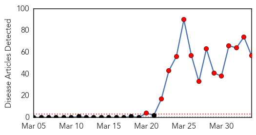
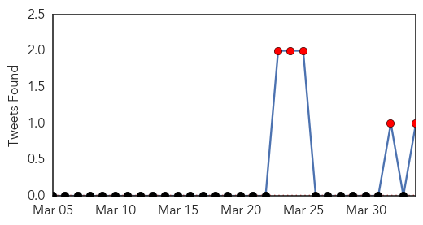
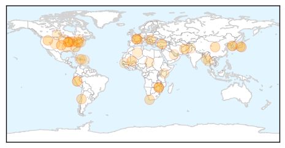
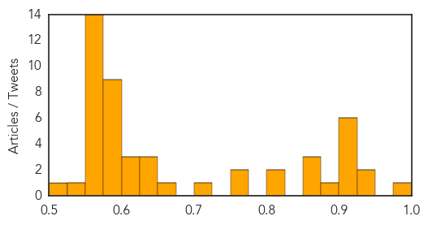

Ebola
30-Day Web Trend
14 alerts, 0 warnings

30-Day Twitter Trend
5 alerts, 0 warnings

Article Locations

Article Confidences

Top Articles:
- 1.000
- S. Sudan takes precautionary anti-Ebola measures
- 1.000
- Ebola Virus Continues to Ravage Guinea and Liberia
- 1.000
- Liberia reports suspected Ebola outbreak unconnected to Guinea
- 1.000
- U.S. team heads to Africa to track deadly Ebola outbreak
- 1.000
- Closing Guinea’s Ebola infection gap
- 1.000
- Vacations, Vaccines And Very Expensive Monkeys
- 1.000
- Liberia reports suspected Ebola outbreak unconnected to Guinea
- 1.000
- CDC investigating Ebola outbreak
- 1.000
- Ebola outbreak medic reveals true horror in Guinea
- 1.000
- Ebola outbreak spreads panic in West Africa
- 1.000
- Ebola Outbreak In Guinea 'Limited Geographically'
- 1.000
- US team helps track path of Ebola virus
- 1.000
- Closing Guinea’s Ebola infection gap - Guinea
- 1.000
- Beware, Ebola virus is dangerous
- 1.000
- Ebola toll tops 85 in West Africa
- 0.999
- Ebola Pandemic Fears Grip West Africa
- 0.999
- Health workers put in extra-efforts at containing Guinea Ebola outbreak -
- 0.999
- Death Toll In Guinea Ebola Outbreak Mounts To 80
- 0.999
- Why West Africa's Ebola outbreak is so scary
- 0.999
- Guinea Mining Operations Closed as Ebola Death Toll Rises to 84
- 0.999
- Mines close as Ebola death toll hits 83 in Guinea
- 0.999
- Rising death toll in Ebola outbreak sparks panic around the world
- 0.999
- Liberia finds Ebola case unrelated to Guinea
- 0.999
- WHO says Guinea Ebola outbreak small as MSF slams international response
- 0.999
- Challenges of Containing Ebola's Spread in West Africa
- 0.998
- Ebola patients await death in Guinea as health workers try to contain virus
- 0.998
- Joint efforts urged to contain spread of Ebola in Africa
- 0.998
- Ebola death toll at 78; 'unprecedented epidemic'
- 0.998
- MSF strengthens response to Ebola in Guinea - Guinea
- 0.997
- Ebola outbreak in Guinea forces miners to lock down operations
- 0.997
- Mali Reports Three Suspected Ebola Cases
- 0.997
- Fear stalks Ebola-hit southern Guinea
- 0.997
- UPDATE 1-Scale of Guinea's Ebola epidemic unprecedented -aid agency
- 0.996
- Liberia reports first Ebola case
- 0.994
- Mali reports three suspected Ebola cases
- 0.994
- US Defense Department Spent $140M On Ebola Treatment Research -- And They're Getting Close
- 0.993
- Why Anthropologists Join An Ebola Outbreak Team : Shots
- 0.993
- France beefs up monitoring over Ebola scare in Guinea
- 0.993
- Why Is Guinea's Ebola Outbreak So Unusual? - Guinea
- 0.992
- Kenya : Are we safe from spread of Ebola?
- 0.987
- Ebola death toll hits 83 in Guinea
- 0.987
- Ebola warning sent to West Africa:Thursday 3 April 2014
- 0.986
- Ebola fever warning for travelers to West Africa, but it’s difficult to catch
- 0.986
- Guinea Ebola death toll is 83 - Daily News
- 0.986
- Miners in lock-down in Guinea as Ebola death toll hits 84
- 0.986
- Miners in lock-down in Guinea as Ebola death toll hits 84
- 0.983
- Guinea: Mining firms in lockdown as Ebola death tolls climbs
- 0.982
- Miners in lockdown in Guinea as Ebola death toll hits 84
- 0.980
- Guinea miners in lockdown after Ebola deaths
- 0.955
- UNICEF-Liberia Ebola Outbreak: SitRep #9, 3 April 2014 - Liberia
Showing top 50 articles...
Top Tweets:
- 0.821
- WHO response to West African ebola outbreak; Saudi healthcare workers and MERS. HealthSecurity http://t.co/JWXBy2z7Nh
Unknown
30-Day Web Trend
0 alerts, 0 warnings

30-Day Twitter Trend
0 alerts, 0 warnings

Article Locations
Article Confidences
Top Articles:
- 0.995
- Water scarcity in Madurai raises fever fear
- 0.946
- 4 new flu deaths in North Carolina
- 0.929
- Man contaminated with rabies in Mali dies in France
- 0.917
- Chicago Tribune
- 0.917
- Chicago Tribune
- 0.917
- Chicago Tribune
- 0.917
- Chicago Tribune
- 0.910
- The world windows to Thailand
- 0.908
- Child arthritis cases spike as Lyme disease pushes further into Canada
- 0.892
- Three wards closed as hospital is hit by the vomiting bug
- 0.866
- Mongolian-flagged cargo ship with North Korean crew sinks off South Korea
- 0.866
- Chile says no reports of injuries or damage after new quake
- 0.866
- Chile orders preventive evacuation of northern coastline
- 0.813
- Health services crippled as hospitals struggle
- 0.802
- Collective will can curb TB epidemic
- 0.772
- 3 on Staten Island affected as cases of rare skin infection double in New York, report says
- 0.758
- Inter-Korea/News/News/KBS World Radio
- 0.716
- Over 100 stomach illness complaints linked to Holland restaurant
- 0.664
- Stroke Risk Spikes Shortly After Shingles Episode: Study
- 0.647
- "Hundreds of thousands" hit by Rakhine aid pullouts
- 0.640
- Zim bans vegetable, fruit imports from SA
- 0.639
- Memphis News and Events
- 0.624
- UN warns of health crisis brewing in west Myanmar
- 0.608
- CDC warns of new risk related to e-cigarettes
- 0.605
- Broken Hearts Can Kill You
- 0.598
- Action Plan on Lyme Disease and Bill C-442
- 0.594
- U.Tsevegmid: Children make up 20 percent of Mongolians going abroad for medical treatment
- 0.593
- Dominican Surgeries Kill Americans
- 0.590
- CDC's Recommended Sodium Intake Levels May Have Negative Health Consequences, Study
- 0.590
- Liquid Nicotine in E-Cigarettes Rising Cause of Poisonings: CDC
- 0.588
- Health crisis brewing in Myanmar: UN
- 0.587
- New EHV-1 Cases Confirmed in Minnesota
- 0.587
- UN warns of health crisis brewing in west Myanmar, SE Asia News & Top Stories
- 0.577
- TB scare at Hre Central Hospital
- 0.558
- US army names Fort Hood shooter as Ivan Lopez
- 0.558
- Algeria's Bouteflika makes rare appearance in talks with Kerry
- 0.558
- Yanukovich 'issued criminal order' to fire at protesters
- 0.558
- Video: Kiev’s far-right groups refuse to disarm
- 0.558
- Video: Kenyan Muslims issue warning over cleric killings
- 0.558
- Turkey's Constitutional Court overturns ban on Twitter
- 0.558
- Turkey lifts Twitter ban
- 0.558
- Marquis de Sade’s ‘120 Days of Sodom’ returned to France
- 0.558
- The scars World War I left on French Canadians
- 0.558
- Pakistan's Musharraf survives new assassination attempt
- 0.558
- Israel scraps Palestinian prisoner release in blow to peace talks
- 0.558
- France 'on alert’ amid Guinea Ebola outbreak
- 0.558
- Chile rocked by 7.6-magnitude aftershock
- 0.558
- Chad to withdraw troops from Central African Republic
- 0.529
- Health 4 Haiti helps those in need
- 0.522
- RI Hospitals Must Report Overdoses Within 48 Hours
Showing top 50 articles...
Top Tweets:
-
No tweets found for Apr 03, 2014